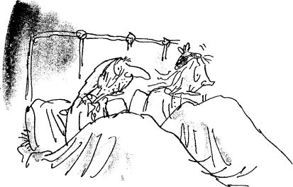
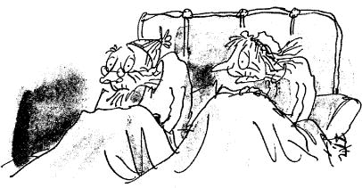
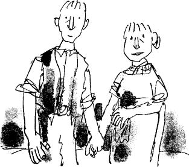
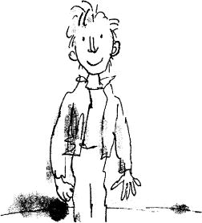
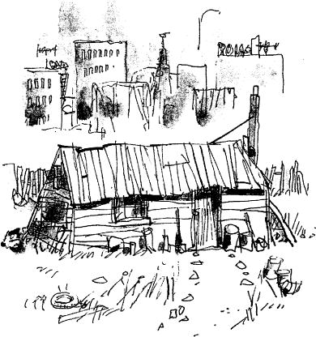

There are five children in this book:
AUGUSTUS GLOOP
A greedy boy
VERUCA SALT
A girl who is spoiled by her parents
VIOLET BEAUREGARDE
A girl who chews gum all day long
MIKE TEAVEE
A boy who does nothing but watch television and
CHARLIE BUCKET
The hero

These two very old people are the father and mother of Mr Bucket. Their names are Grandpa Joe and Grandma Josephine.

And these two very old people are the father and mother of Mrs Bucket. Their names are Grandpa George and Grandma Georgina.

This is Mr Bucket. This is Mrs Bucket.
Mr and Mrs Bucket have a small boy whose name is Charlie Bucket.

This is Charlie.
How d’you do? And how d’you do? And how d’you do again? He is pleased to meet you.
The whole of this family – the six grown-ups (count them) and little Charlie Bucket – live together in a small wooden house on the edge of a great town.

The house wasn’t nearly large enough for so many people, and life was extremely uncomfortable for them all. There were only two rooms in the place altogether, and there was only one bed. The bed was given to the four old grandparents because they were so old and tired. They were so tired, they never got out of it.
Grandpa Joe and Grandma Josephine on this side, Grandpa George and Grandma Georgina on this side.
Mr and Mrs Bucket and little Charlie Bucket slept in the other room, upon mattresses on the floor.
In the summertime, this wasn’t too bad, but in the winter, freezing cold draughts blew across the floor all night long, and it was awful.
There wasn’t any question of them being able to buy a better house – or even one more bed to sleep in. They were far too poor for that.
Mr Bucket was the only person in the family with a job. He worked in a toothpaste factory, where he sat all day long at a bench and screwed the little caps on to the tops of the tubes of toothpaste after the tubes had been filled. But a toothpaste cap-screwer is never paid very much money, and poor Mr Bucket, however hard he worked, and however fast he screwed on the caps, was never able to make enough to buy one half of the things that so large a family needed. There wasn’t even enough money to buy proper food for them all. The only meals they could afford were bread and margarine for breakfast, boiled potatoes and cabbage for lunch, and cabbage soup for supper. Sundays were a bit better. They all looked forward to Sundays because then, although they had exactly the same, everyone was allowed a second helping.
The Buckets, of course, didn’t starve, but every one of them – the two old grandfathers, the two old grandmothers, Charlie’s father, Charlie’s mother, and especially little Charlie himself – went about from morning till night with a horrible empty feeling in their tummies.
Charlie felt it worst of all. And although his father and mother often went without their own share of lunch or supper so that they could give it to him, it still wasn’t nearly enough for a growing boy. He desperately wanted something more filling and satisfying than cabbage and cabbage soup. The one thing he longed for more than anything else was… CHOCOLATE.
Walking to school in the mornings, Charlie could see great slabs of chocolate piled up high in the shop windows, and he would stop and stare and press his nose against the glass, his mouth watering like mad. Many times a day, he would see other children taking bars of creamy chocolate out of their pockets and munching them greedily, and that, of course, was pure torture.
Only once a year, on his birthday, did Charlie Bucket ever get to taste a bit of chocolate. The whole family saved up their money for that special occasion, and when the great day arrived, Charlie was always presented with one small chocolate bar to eat all by himself. And each time he received it, on those marvellous birthday mornings, he would place it carefully in a small wooden box that he owned, and treasure it as though it were a bar of solid gold; and for the next few days, he would allow himself only to look at it, but never to touch it. Then at last, when he could stand it no longer, he would peel back a tiny bit of the paper wrapping at one corner to expose a tiny bit of chocolate, and then he would take a tiny nibble – just enough to allow the lovely sweet taste to spread out slowly over his tongue. The next day, he would take another tiny nibble, and so on, and so on. And in this way, Charlie would make his sixpenny bar of birthday chocolate last him for more than a month.
But I haven’t yet told you about the one awful thing that tortured little Charlie, the lover of chocolate, more than anything else. This thing, for him, was far, far worse than seeing slabs of chocolate in the shop windows or watching other children munching bars of creamy chocolate right in front of him. It was the most terrible torturing thing you could imagine, and it was this:
In the town itself, actually within sight of the house in which Charlie lived, there was an ENORMOUS CHOCOLATE FACTORY!
Just imagine that!
And it wasn’t simply an ordinary enormous chocolate factory, either. It was the largest and most famous in the whole world! It was WONKA’S FACTORY, owned by a man called Mr Willy Wonka, the greatest inventor and maker of chocolates that there has ever been. And what a tremendous, marvellous place it was! It had huge iron gates leading into it, and a high wall surrounding it, and smoke belching from its chimneys, and strange whizzing sounds coming from deep inside it. And outside the walls, for half a mile around in every direction, the air was scented with the heavy rich smell of melting chocolate!
Twice a day, on his way to and from school, little Charlie Bucket had to walk right past the gates of the factory. And every time he went by, he would begin to walk very, very slowly, and he would hold his nose high in the air and take long deep sniffs of the gorgeous chocolatey smell all around him.
Oh, how he loved that smell!
And oh, how he wished he could go inside the factory and see what it was like!